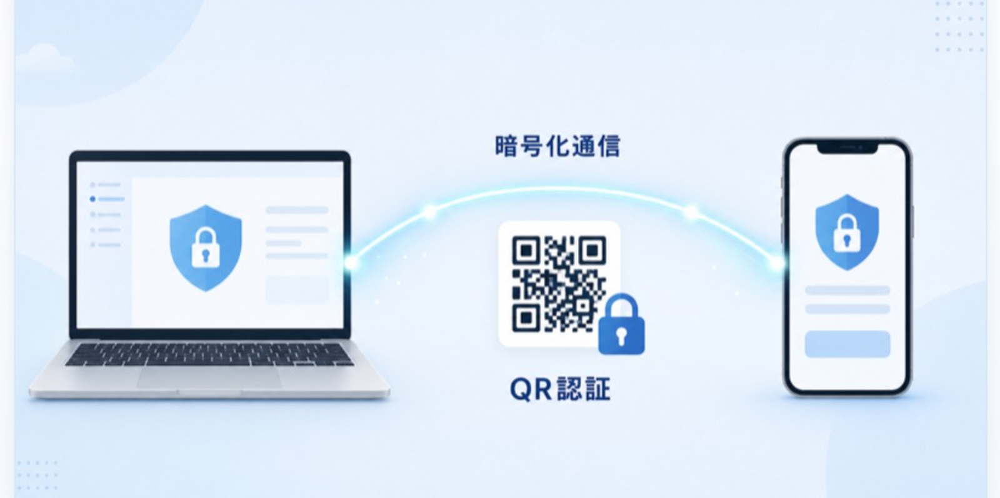
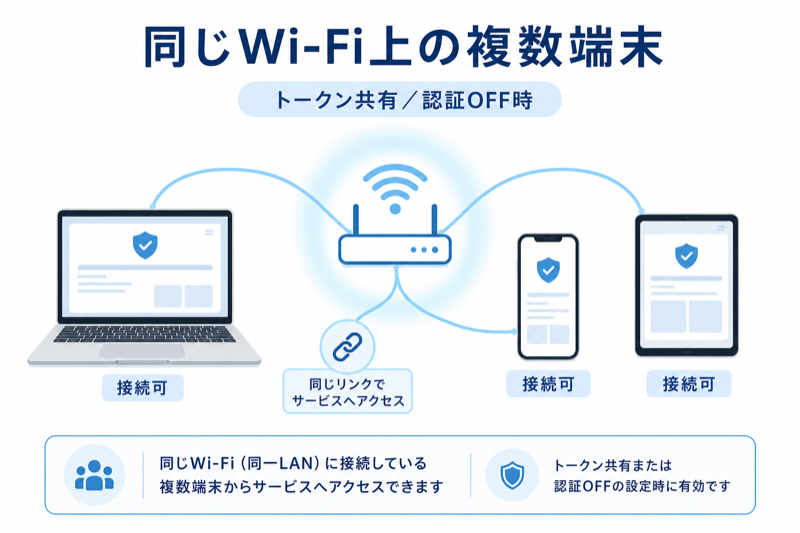

セキュリティ対策の詳細
接続にはQRコードによるトークン認証を使用し、認証済みの端末だけがコピー履歴にアクセスできます。
さらに通信はHTTPSで暗号化されるため、同じWi-Fi上の端末でも、認証されていない端末からはアクセスできません。
Webブラウザ証明書
Macとスマホ／タブレット間で証明書を交換することによって、暗号化されたセキュリティの高いHTTPS通信を使用します。
トークン認証（QRコード読み取り）
同じWi-Fiにつながる同僚や家族の端末からはアクセスできないようになっています。
QRコードを読み取った端末のみ接続可能な安全設計です。

※ トークン含みURLを共有するか、トークン認証設定OFFにすると、同じWi-Fiにつながる複数端末からアクセス可能になります。
